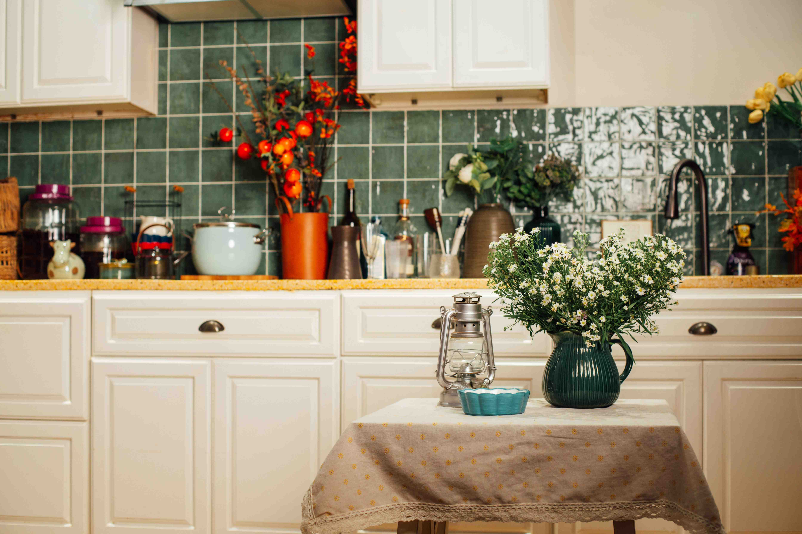
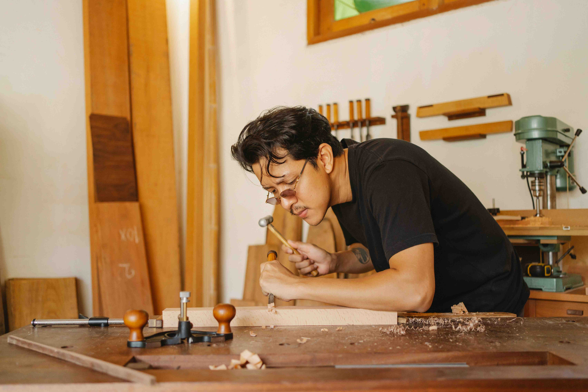

Pad & shellac
Traditional French polishing develops an even sheen through controlled, thin hand-applied coats.
Discuss suitability ↗THE RESTORATION STUDIO / HOME 02
For the pieces you choose to keep. Explore a studio approach to antique furniture, considered colour and expressive wood finishes.
Inside the studio ↗THE FEATURED STORY

THE CABINET STUDY
Imagine a vintage cabinet whose finish has become uneven through everyday use. The first question is what can be retained, rather than what can be stripped away.
A project record should document the starting condition, proposed treatment and agreed sheen. Replace this story with a real cabinet assessment and photographs.
Study the surface ↗SIGNATURE TECHNIQUES
Traditional French polishing develops an even sheen through controlled, thin hand-applied coats.
Discuss suitability ↗Colour trials help establish how a repaired area will sit alongside the surrounding finish.
Discuss suitability ↗Where appropriate, localized work preserves sound original material and avoids an unnecessary full refinish.
Discuss suitability ↗ANTIQUE & VINTAGE
Patina can tell a valuable story. Assess original surfaces and construction before changing them.
MATERIAL KNOWLEDGE
Species, grain direction and natural colour influence the visual result of a finish.
Thin veneers and fragile edges call for carefully limited preparation.
Compatibility and intended use guide whether shellac, varnish or another system is suitable.
BEFORE & AFTER
Move the slider to explore the comparison layout. Replace these sample assets with photographs of the same restoration project.


PROJECT LAYOUT · SAMPLE CONTENT

THE PEOPLE BEHIND THE FINISH
A careful craftsperson looks for construction details, past repairs and the way light falls across a surface. Those observations inform the work before any finish is applied.
Add your actual team profile here, with accurate roles and experience.
Meet our workshop ↗THE STUDIO ROUTE
Describe the piece, how it is used and what you would like to retain.
Review condition, finish options, limitations and a written scope.
Preparation, repairs and finishing are approached in a controlled sequence.
Review the finish and follow advice on curing, handling and care.
RESIDENTIAL & COMMERCIAL
Individual pieces and inherited furniture assessed in the context of their history.
Furniture and fittings considered against use, maintenance and access requirements.
Colour samples and finish choices discussed alongside an interior specification.
A FINISH COMPANION
French polish can develop depth and controlled sheen on suitable surfaces, but needs protection from water, heat and alcohol.
Varnish performance depends on the formulation, preparation and curing. It is a separate finishing method from shellac.
Lacquer and other systems require compatibility checks. A matching appearance does not automatically mean matching chemistry.
CUSTOMER STORIES
START A CONVERSATION
Tell us about the piece, its condition and the finish you have in mind.
Request an assessment ↗